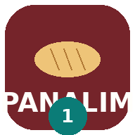
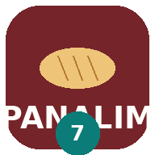

App 1 · ProducciónOrden, moldeado, calidad, relevo y cierre del turno 1

App 7 · Turno 2Supervisor: local principal, pastelería, sobrantes y T3
App 8 · T3 MoldeadorRegistro de producción del turno tarde
Instalar en Android: abra cada app en Chrome → menú ⋮ → Instalar aplicación (o «Agregar a la pantalla principal»). Cada una queda como un ícono aparte, abre a pantalla completa y funciona sin internet.
Los datos se guardan en el teléfono. Entre apps se pasan con los archivos sellados (WhatsApp / Telegram).
Los datos se guardan en el teléfono. Entre apps se pasan con los archivos sellados (WhatsApp / Telegram).